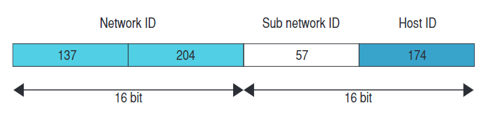

L’indirizzo di network rimane invariato mentre i 16 bit
dell’indirizzo di host in questo caso sono stati “spezzati”
in due parti di 8 bit:
- la prima parte, cioè i primi 8 bit,
identifica una porzione della rete in questione (57);
- la seconda identifica il singolo host della sottorete (174).
Subnetting
Il subnetting è l’operazione che viene effettuata sul campo host suddividendolo in due parti per organizzare la rete in parti più piccole: le sottoreti.
Un esempio di indirizzo di classe B con subnetting è il seguente:

 Indietro
Indietro